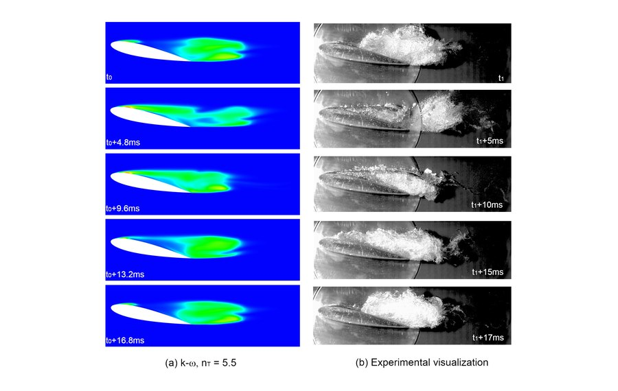
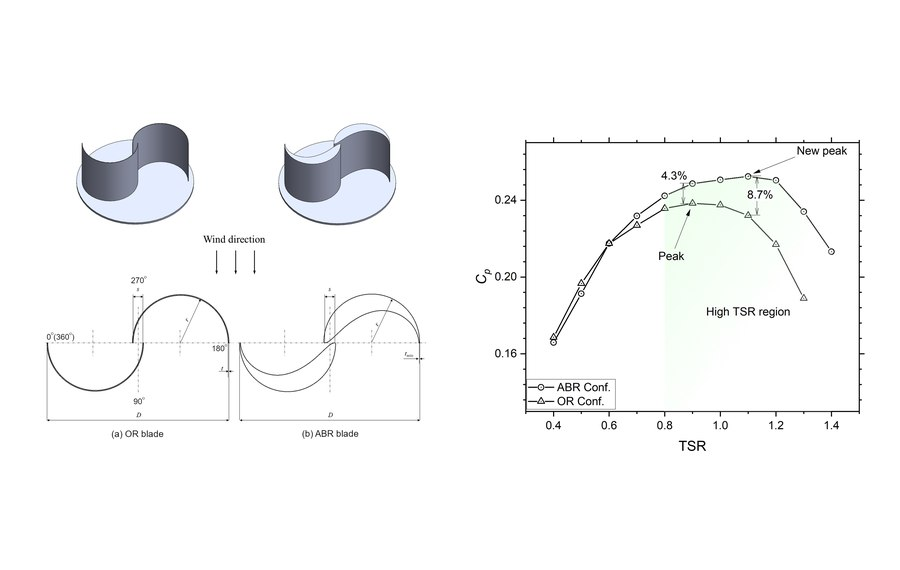
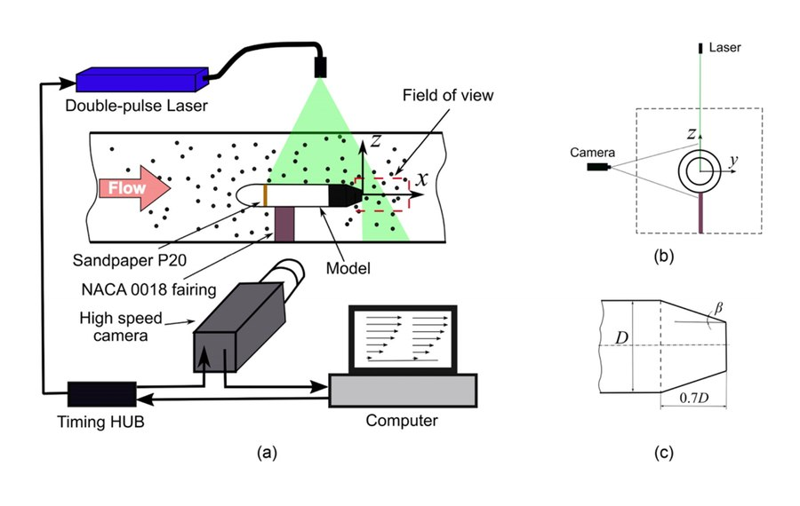

2026
Coupled blade profile and cylindrical deflector for enhancing Savonius wind turbine performance
Ocean Engineering, 365, 127386.
We investigate complex fluid phenomena through advanced numerical simulations and experiments — advancing cavitation science, renewable energy and hydro–aerodynamic design.
Our work combines computational fluid dynamics, experimental observation and engineering innovation.

Unsteady multiphase flows, thermodynamic effects and cavitation instability, studied through CFD and experiments.
Explore research ↗
Wind and hydrokinetic turbine aerodynamics, advanced turbulence modeling and high-performance rotor design.
Explore research ↗
CFD and experimental methods for drag reduction, heat-transfer enhancement and flow efficiency.
Explore research ↗From vapor structures in cavitating flows to energy conversion in next-generation turbines, AFM brings numerical insight and engineering application together.
Discover our projects ↗Recent peer-reviewed research from across the group.
Ocean Engineering, 365, 127386.
Physics of Fluids, 37, 113327.
Energy Conversion and Management, 310, 118469.
AFM-G collaborates with academic laboratories, research groups and industry partners in fluid mechanics, renewable energy, and hydro–aerodynamic optimization.